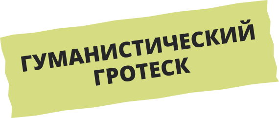
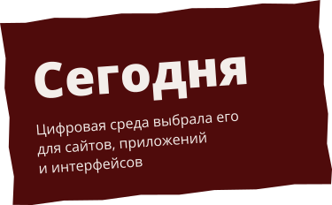
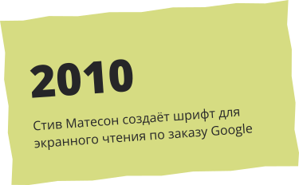
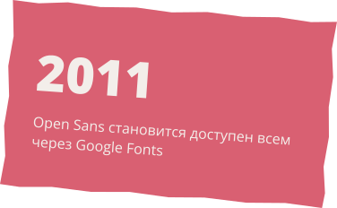
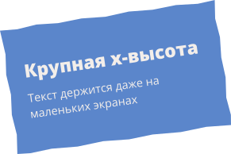
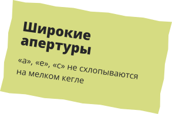
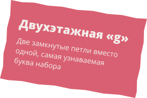
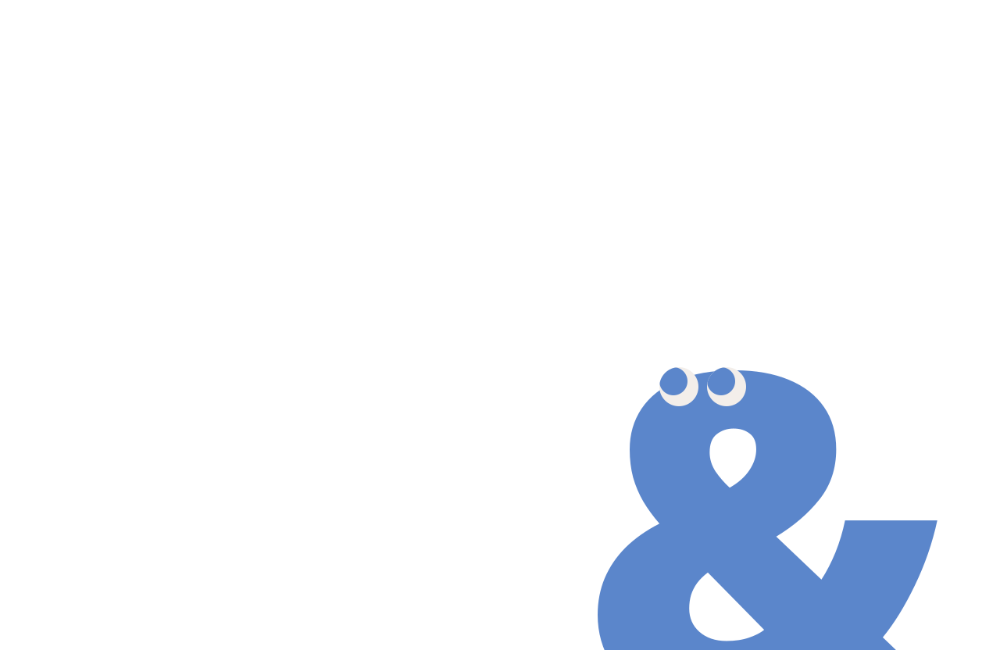
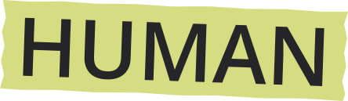

OPEN SANS
Steve Matteson, 2011
Тёплый, открытый и спокойный шрифт,
которому доверяют интерфейсы, сайты и печать

Откуда появился?
ЗАДАЧА
Разработать нейтральный, дружелюбный
и читаемый шрифт для цифровой среды.
Главный приоритет — ясность на экране.



Анатомия
Открытые формы и чёткие штрихи
помогают глазу мгновенно узнавать буквы,
даже при мелком кегле на экране
g



Один шрифт
Разный характер
300Light
400Regular
500Medium
600SemiBold
700Bold
800ExtraBold
Тише → Громче
ABCDEFGHIJKLMNOPQRSTUVWXYZ
abcdefghijklmnopqrstuvwxyz
АБВГДЕЁЖЗИЙКЛМНОП
РСТУФХЦЧШЩЪЫЬЭЮЯ
абвгдеёжзийклмнопр
стуфхцчшщъыьэюя
0123456789 !?@#$%&

OPENExtraBold · 800
CLEARLight Italic · 300
